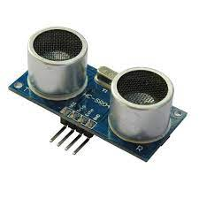
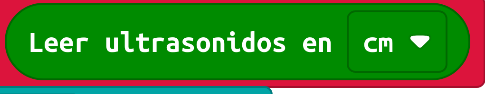

Durante la Segunda Guerra Mundial, los precursores de los robots móviles surgieron por las necesidades de la guerra, l bombas volantes e inteligentes que usaban un sistema de guía para saber dónde y cuando detonarse.
A principios de la década de los 60’s la Universidad John Hopkins crea “Bestia”, robot que utilizaba un sonar, tipo submarino para moverse.
Lo detecto y lo esquivo
Las ondas sonoras al chocar con un objeto rebotan y se propagan en direcciones distintas dependiendo del objeto y la distancia. Cuando usas el sensor ultrasónico pasa lo mismo que con tu voz, las vibraciones que produce se expanden y rebotan, de modo que, dependiendo de cuánto se tardó en regresar la onda, es la distancia que tiene el sensor al objeto.
Los murciélagos utilizan la ecolocalización para encontrar comida y para evitar chocar con algún objeto que sus ojos no hayan podido ver, al igual que algunos cetáceos y por supuesto, la tecnología implementada en submarinos está basada en el mismo principio. La instrucción es:

La instrucción devuelve un número. Tienes que utilizar un condicional para actuar (en este caso retrocedes)
Puedes hacer que emita un pitido o que encienda luces y cambie de dirección.
 Durante la Segunda Guerra Mundial, los precursores de los robots móviles surgieron por las necesidades de la guerra, l bombas volantes e inteligentes que usaban un sistema de guía para saber dónde y cuando detonarse.
Durante la Segunda Guerra Mundial, los precursores de los robots móviles surgieron por las necesidades de la guerra, l bombas volantes e inteligentes que usaban un sistema de guía para saber dónde y cuando detonarse.